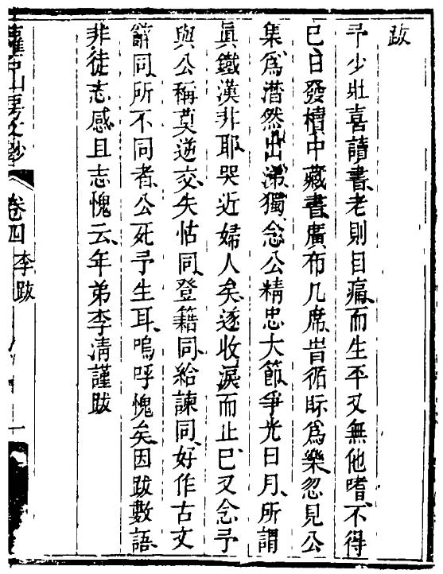
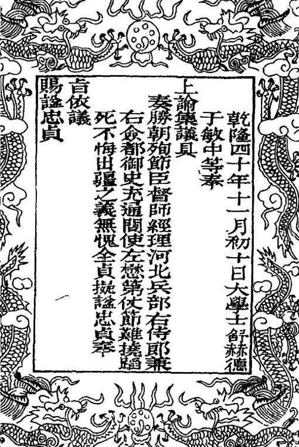

读左公事迹，有些问题挥之不去。像他这样的人和事，出现在蓬勃、向上、昌明的国度，不难解释，因为信心饱满、信念坚定，精神容易强大、劲拔。但是，左懋第却置身江河日下、千疮百孔、穷途末路的明末。这是“明代苏武”与“汉代苏武”最大和最重要的不同。他展示的精神，无论质地与分量都与苏武相当，而不逊色；但我能够了解苏武之能如此，却不甚明了左懋第是怎样做到的。孔子好几次谈到“邦无道”情形下，个人可取的态度。一次说：“危邦不入，乱邦不居。天下有道则见，无道则隐。”[93]一次说：“邦有道，危言危行；邦无道，危行言孙。”[94]孙同逊，朱熹注曰：“危，高峻也。孙，卑顺也。”还有一次说：“邦无道，则可卷而怀之。”[95]卷是柔软、收拢，怀是怀藏。——即依先师之见，当着明末那样黑暗的政治，刑政纪纲俱紊，如果知难而退、明哲保身，也不算品格有亏。显然，左懋第的行为大大超出了一般的道德高度，甚至超出了时代对他的要求。

《萝石山房文钞》李清跋文
《萝石山房文钞》四卷，由李清在左懋第死后编就，但直至乾隆末年方由左氏后人印行。李清在跋文中，讲述了动念编此书的经过，“发椟中藏书⋯⋯忽见公集，为潸然出涕，独念公精忠大节，争光日月，所谓真铁汉非耶，哭近妇人矣。”

赐谥左懋第“忠贞”的乾隆圣旨
载乾隆刻本《左懋第剩稿》卷首，书成于乾隆癸丑年（1794）。先是左懋第、刘宗周等前明忠臣于乾隆四十年得旨褒谥，左氏后人才敢将私藏的《奉使不屈疏》等文，收录于书中。
他应该是想证明什么。在总共八个月、长达二百多天的过程中，面对咄咄逼人、不可一世的满清征服者，他全身挺直，目光炯炯，未尝稍懈。他应该是把自己视为明朝的代表，以至中国历史和精神的代表，进行一番“中国有人”、“中国精神犹存”的证明。可惜得承认，他什么也证明不了。他的努力，在腐朽、土崩瓦解、溃不成军的朝廷衬托下，那么无力，可谓惨败。但在个人层面，他做出了极其强大、堪称壮丽的证明——我完全无法从脑际抹去那个行刑前在他面前“跪泣不止”的刽子手的形象。左懋第征服了每个人，甚至多尔衮和以后的乾隆皇帝。而这力量从深层看，确实又并不仅与个人相关，确实是“中国历史和精神”的证明。倘若如此，最终，左懋第可称“赍志以终”；血，还是没有白流。
乾隆四十年，乾隆皇帝批准表彰明朝忠臣，左懋第在其内；大学士舒赫德、于敏中奉旨集议，做出的评介是：“仗节难挠，蹈死不悔出疆之义，无愧全贞。”乾隆据此赐谥“忠贞”。[96]这样，左氏族裔才敢将私藏多年的左懋第文稿，成册刻行，凡四卷；左公诗文幸赖以存，否则，恐怕早就毁佚无多。
之前康熙间，前任弘光朝大理寺丞并与左懋第相厚的李清，私下辑成《萝石山房文钞》。他为文集写了感人的跋，叙述已在耄耋之年的他，如何于旧藏之中翻检出左氏作品，读之，“潸然出涕”，“念公精忠大节，争光日月，所谓真铁汉非耶！”那场痛哭，李清自己形容“哭近妇人矣”。收起泪水，他决心忍着老年的“目痛”，将所存左氏之作汇编成书。他最后写道：
公死予生，呜呼愧矣！因跋数语，非徒志感，且志愧云。[97]
李清的“愧”，除了他自己，也属于整整一个时代。
[1] 谈迁《国榷》，中华书局，2005，第6118页。
[2] 史可法《款虏疏》，冯梦龙编《中兴实录》，《南明史料（八种）》，江苏古籍出版社，1999，第648页。句逗略有改动，与原书不尽相同；另外，“即定”原作“既定”，据文意改。
[3] 陈洪范《北使纪略》，《中国野史集成》第三十三册，巴蜀书社，1993，第35页。
[4] 张廷玉等《明史》卷二百七十五，中华书局，1974，第7050页。
[5] 钱《使臣碧血》，《甲申传信录》卷十，上海书店，1982，第155页。
[6] 李清《南渡录》，《南明史料（八种）》，江苏古籍出版社，1999，第169-170页。
[7] 陆廷抡《萝石山房文钞序》，左懋第著、李映碧编《萝石山房文钞》卷一，乾隆刻本。
[8] 张廷玉等《明史》卷二百七十五，中华书局，1974，第7048页。
[9] 王士禛《池北偶谈》，中华书局，1997，第163页。
[10] 脱脱等《宋史》卷三百五十三张叔夜传，中华书局，1977，第11142页。
[11] 李清《南渡录》，《南明史料（八种）》，江苏古籍出版社，1999，第169页。
[12] 张廷玉等《明史》卷二百七十五，中华书局，1974，第7050页。
[13] 李清《南渡录》，《南明史料（八种）》，江苏古籍出版社，1999，第170页。
[14] 左懋第《新汉典属国苏子卿墓垣记》，《萝石山房文钞》卷三，乾隆刻本。
[15] 班固《汉书》卷五十四，中华书局，2002，第2467页。
[16] 左懋第《新汉典属国苏子卿墓垣记》，《萝石山房文钞》卷三，乾隆刻本。
[17] 同上。
[18] 左懋第《新汉典属国苏子卿墓垣记》，《萝石山房文钞》卷三，乾隆刻本。
[19] 同上。
[20] 同上。
[21] 李清《南渡录》，《南明史料（八种）》，江苏古籍出版社，1999，第189页。
[22] 张廷玉等《明史》卷二百七十五，中华书局，1974，第7051页。
[23] 陈洪范《北使纪略》，《中国野史集成》第三十三册，巴蜀书社，1993，第35页。该文旧刻，字句多舛脱，括号内文字，系校订者揣原意所补。
[24] 原印“汶土”，显系汶上之误。汶上县地处鲁西南，济宁之北。
[25] 陈洪范《北使纪略》，《中国野史集成》第三十三册，巴蜀书社，1993，第35页。
[26] 《陈洪范致吴三桂书》，中国国家博物馆馆藏影印件。
[27] 《马绍愉致吴三桂书》，中国国家博物馆馆藏影印件。
[28] 《陈洪范致吴三桂书》，中国国家博物馆馆藏影印件。
[29] 《马绍愉致吴三桂书》，中国国家博物馆馆藏影印件。
[30] 钱《使臣碧血》，《甲申传信录》卷十，上海书店，1982，第156页。
[31] 陈洪范《北使纪略》，《中国野史集成》第三十三册，巴蜀书社，1993，第35页。
[32] 同上。
[33] 《陈洪范致吴三桂书》，中国国家博物馆馆藏影印件。
[34] 陈洪范《北使纪略》，《中国野史集成》第三十三册，巴蜀书社，1993，第35页。
[35] 陈洪范《北使纪略》，《中国野史集成》第三十三册，巴蜀书社，1993，第36页。
[36] 王先谦《东华录》，《续修四库全书》三六九•史部•编年类，上海古籍出版社，2001，第224页。
[37] 陈洪范《北使纪略》，《中国野史集成》第三十三册，巴蜀书社，1993，第36页。
[38] 同上。
[39] 钱《使臣碧血》，《甲申传信录》卷十，上海书店，1982，第156页。
[40] 同上。
[41] 佚名《使臣碧血录》，《南明史料（八种）》，江苏古籍出版社，1999，第769页。
[42] 陈洪范《北使纪略》，《中国野史集成》第三十三册，巴蜀书社，1993，第35页。
[43] 同上。
[44] 钱《使臣碧血》，《甲申传信录》卷十，上海书店，1982，第156页。
[45] 左懋第《奉使不屈疏》，《左忠贞公剩稿》卷一，乾隆刻本，第22页。
[46] 同上。
[47] 钱《使臣碧血》，《甲申传信录》卷十，上海书店，1982，第156页。
[48] 佚名《使臣碧血录》，《南明史料（八种）》，江苏古籍出版社，1999，第769页。
[49] 同上。
[50] 陈洪范《北使纪略》，《中国野史集成》第三十三册，巴蜀书社，1993，第36页。
[51] 左懋第《奉使不屈疏》，《左忠贞公剩稿》卷一，乾隆刻本，第22页。
[52] 陈洪范《北使纪略》，《中国野史集成》第三十三册，巴蜀书社，1993，第36页。
[53] 左懋第《奉使不屈疏》，《左忠贞公剩稿》卷一，乾隆刻本，第22页。
[54] 同上，第23页。
[55] 赵尔巽等《清史稿》卷二百四十五，中华书局，1977，第9629页。
[56] 同上，第9638页。
[57] 《世祖章皇帝实录》卷九，中华书局，1985，第92页。
[58] 《世祖章皇帝实录》卷一一，中华书局，1985，第108页。
[59] 《世祖章皇帝实录》卷五，中华书局，1985，第60页。
[60] 左懋第《奉使不屈疏》，《左忠贞公剩稿》卷一，乾隆刻本，第23页。
[61] 陈洪范《北使纪略》，《中国野史集成》第三十三册，巴蜀书社，1993，第36页。
[62] 左懋第《奉使不屈疏》，《左忠贞公剩稿》卷一，乾隆刻本，第23页。
[63] 陈洪范《北使纪略》，《中国野史集成》第三十三册，巴蜀书社，1993，第36页。
[64] 左懋第《奉使不屈疏》，《左忠贞公剩稿》卷一，乾隆刻本，第23页。
[65] 陈洪范《北使纪略》，《中国野史集成》第三十三册，巴蜀书社，1993，第36页。
[66] 陈洪范《北使纪略》，《中国野史集成》第三十三册，巴蜀书社，1993，第37页。
[67] 同上。
[68] 左懋第《奉使不屈疏》，《左忠贞公剩稿》卷一，乾隆刻本，第25页。
[69] 《世祖章皇帝实录》卷五，中华书局，1985，第62页。
[70] 同上。
[71] 《世祖章皇帝实录》卷五，中华书局，1985，第62页。
[72] 《摄政王与史可法书》，抱阳生《甲申朝事小纪》，书目文献出版社，1987，第608-609页。
[73] 《世祖章皇帝实录》卷五，中华书局，1985，第62页。
[74] 《世祖章皇帝实录》卷一一，中华书局，1985，第105页。
[75] 陈洪范《北使纪略》，《中国野史集成》第三十三册，巴蜀书社，1993，第37页。
[76] 左懋第《奉使不屈疏》，《左忠贞公剩稿》卷一，乾隆刻本，第24页。
[77] 同上，第25页。
[78] 左懋第《奉使不屈疏》，《左忠贞公剩稿》卷一，乾隆刻本，第26页。
[79] 左懋第《奉使不屈疏》，《左忠贞公剩稿》卷一，乾隆刻本，第26页。
[80] 同上。
[81] 同上。
[82] 抱阳生《甲申朝事小纪》，书目文献出版社，1987，第734页。
[83] 张廷玉等《明史》卷二百七十五，中华书局，1974，第7051页。
[84] 抱阳生《甲申朝事小纪》，书目文献出版社，1987，第731-732页。
[85] 《左忠贞公剩稿》卷四，乾隆刻本，第22页。
[86] 沈德符《万历野获编》，中华书局，1997，第931页。
[87] 袁枚《随园诗话》，中华书局，1982，第232页。
[88] 《左忠贞公剩稿》卷四，乾隆刻本，第29页。
[89] 《左忠贞公剩稿》卷四，乾隆刻本，第37页。
[90] 抱阳生《甲申朝事小纪》，书目文献出版社，1987，第732页。
[91] 依“左萝石纪”，左氏被害日期为顺治二年六月二十日，《明史》左懋第传则写为同年闰六月十二日。查《顺治实录》、《东华录》，对此事居然都未载，或因瞒讳而抹去。按：满清薙发令下达日期，《顺治实录》、《东华录》均为六月丙寅（十五日），而左懋泰系因抗拒薙发令被害，故《明史》闰六月十二日之说不可信。
[92] 以上，均见抱阳生《甲申朝事小纪》，书目文献出版社，1987，自732至734页。
[93] 朱熹《四书章句集注》，《论语》集注卷四泰伯第八，中华书局，1983，第106页。
[94] 朱熹《四书章句集注》，《论语》集注卷七宪问第十四，中华书局，1983，第149页。
[95] 朱熹《四书章句集注》，《论语》集注卷八卫灵公第十五，中华书局，1983，第163页。
[96] 《左忠贞公剩稿》卷一，乾隆刻本，卷首。
[97] 《萝石山房文钞》卷四，乾隆刻本，卷尾。